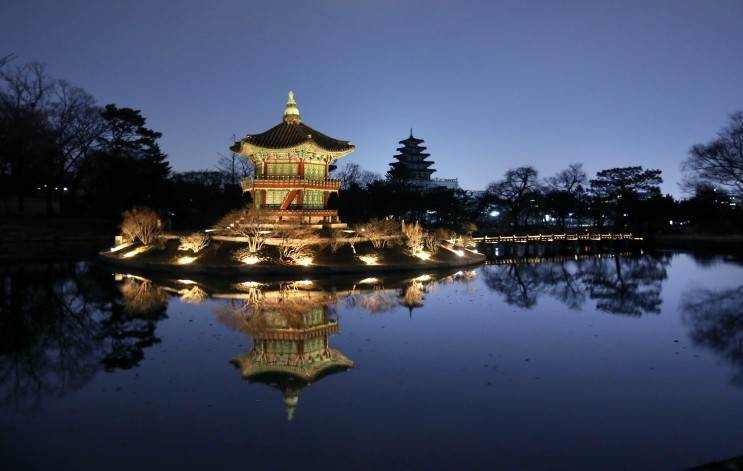

향원정
이란?
왕과 왕비가 조용히 휴식을 취하는 공간으로, ‘향기는 멀리 갈수록 맑아진다’라는 뜻을 가지고 있다
흥선대원군에게서 왕권을 되찾은 고종은 명성황후와 함께 건청궁에 머물렀고, 향원정로 다리를 내어 틈틈이 찾으며 휴식을 취했다고 한다.
향원정과 건청궁
고종 내외가 아버지인 ①흥선대원군의 간섭에서 정치적으로 자립하기 위해 1873년 건청궁(乾淸宮)
을 궁궐 안 복쪽에 별도로 조성했다. 침전인 곤녕합, 옥호루와 왕의 사랑채인 장안당 등으로 구성됐다. 곤녕합은 1895년 을미사변 때 명성황후가 ②시해된 역사적 비극의 장소다. 후공 영역 뒤 정원으로 만들어진 연못 안에는 원래 취로정(翠露亭)이 있었는데 건청궁을 창건하면서 그 자리에 향원정을 새로지어 건청궁의 앞 정원이 됐다. 부정형의 연못에 둥근 섬을 만들고 육각 정자를 세웠으며, 원래는 북쪽으로 다리를 놓아 건청궁과 연결했으나 현재는 남쪽으로 놓여 있다.
① 흥선대원군의 간섭에서 정치적으로 자립하기 위해 1873년
이때 고종의 나이는 만21세, 11살이라는 어린 나이에 즉위했기에 10년간은 아버지가 대신 나라를 다스림. 하지만 이제 고종이 나라를 다스릴 나이가 되고, 건청궁을 지은 해 11월에 흥선대원군이 운현궁으로 물러나고 고종이 왕권을 되찾음.
②시해
부모나 임금을 죽이는 일